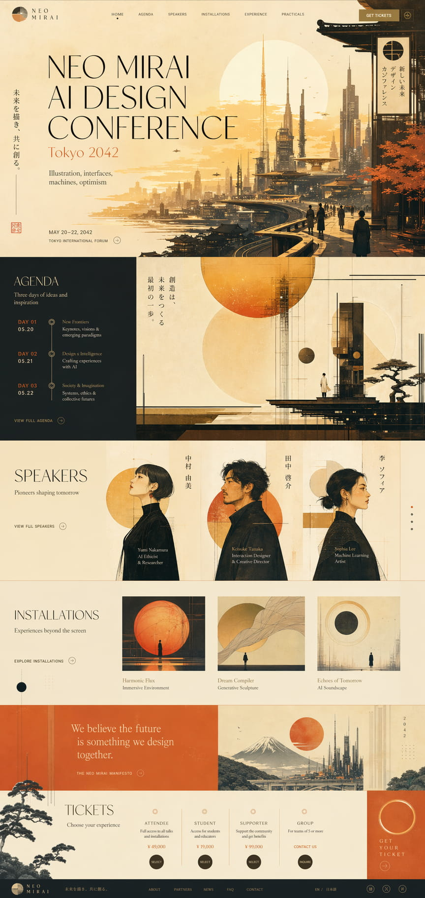
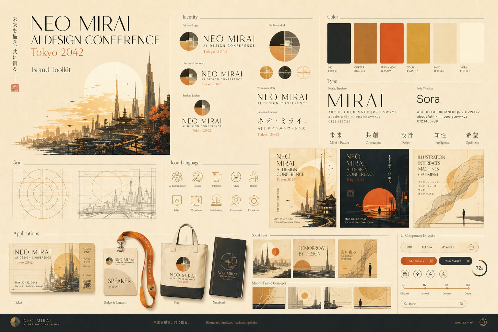

构图对齐
最终页面保留了原 mock 的非对称节奏：通栏 hero 视觉、深色议程区、橙色宣言带、漂浮的装置网格，以及结构清晰的票务区。
这个复古未来主义 AI 设计大会，最终通过完整的 Impeccable 闭环变成了真实静态网站：可视参考、品牌方向、页面实现、素材重生、响应式修正、动画打磨，以及浏览器验证。




最终页面保留了原 mock 的非对称节奏：通栏 hero 视觉、深色议程区、橙色宣言带、漂浮的装置网格，以及结构清晰的票务区。
该保持图像形态的内容，就继续保持图像形态。宣言城市、讲者肖像、松针叠层和辅助插图，都在需要栅格细节的地方重新生成或单独提取。
每一轮修改后都直接进浏览器检查。重叠问题、裁切失衡、导航激活态、讲者轮播行为、移动端高度，以及大屏视口平衡，都是在可视环境里逐步修掉的。
如果一个功能需要在一次流程里同时完成方向塑形、可视参考、代码实现和浏览器迭代，正确命令就是 /impeccable craft。
/impeccable craft retro-futurist AI design conference website